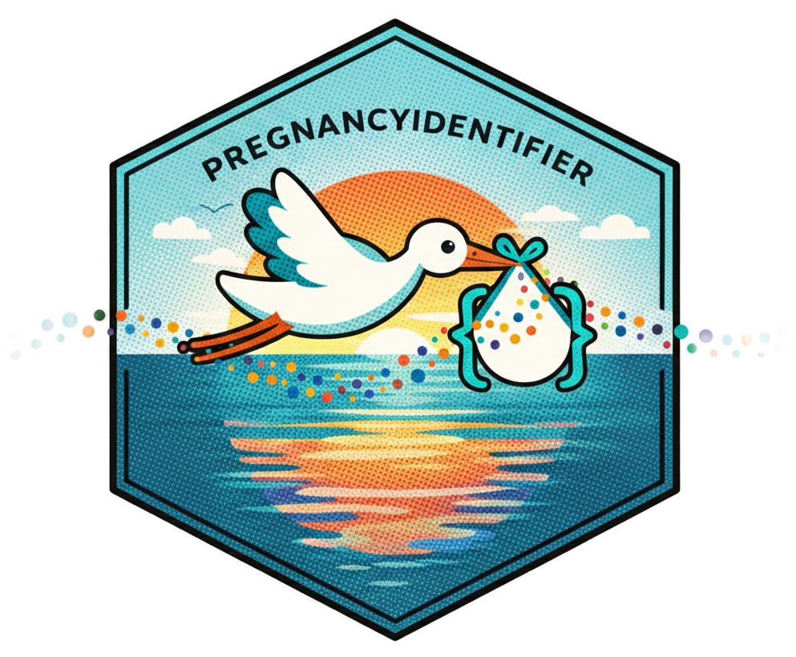

Export pregnancy results into shareable summary CSVs
Source:R/exportPregnancies.R
exportPregnancies.RdReads the patient-level pregnancy episode results produced by the pipeline (from
outputFolder; see runPregnancyIdentifier()), generates a set of
de-identified summary tables (counts, age summaries, timing distributions,
outcome counts, and date completeness checks), and writes them to exportFolder.
runPregnancyIdentifier() runs this step automatically and writes to
exportFolder (default file.path(outputFolder, "export")); use
exportPregnancies() when you need to re-export or write to a different
directory. Does not create a ZIP file; use zipExportFolder() after export
(and optionally after writing PET comparison tables to the same folder) to create
an archive.
Arguments
- cdm
(`cdm_reference`) CDM reference used to compute exports that require database tables (e.g., `person`, `observation_period`).
- outputFolder
(`character(1)`) Directory containing pipeline outputs (e.g., `final_pregnancy_episodes.rds`, logs, `pps_concept_counts.csv`).
- exportFolder
(`character(1)`) Directory where shareable CSVs will be written.
- minCellCount
(`integer(1)`) Minimum count threshold for suppression of small cells (default 5). Values in (0, minCellCount) are replaced with `NA`.
- res
Optional data frame of pregnancy episodes. If provided, used instead of reading
final_pregnancy_episodes.rdsfromoutputFolder. Used when exporting a conformed copy (e.g.conformToValidation = "both").